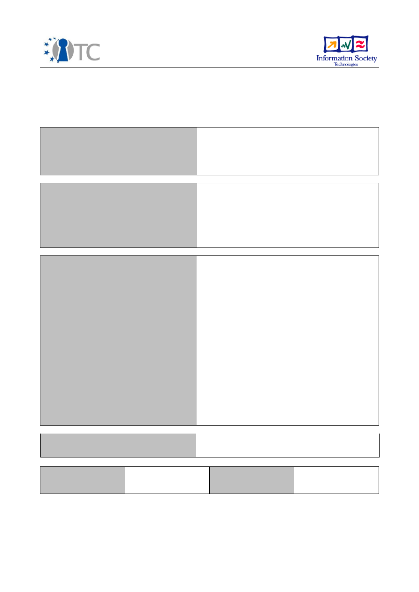
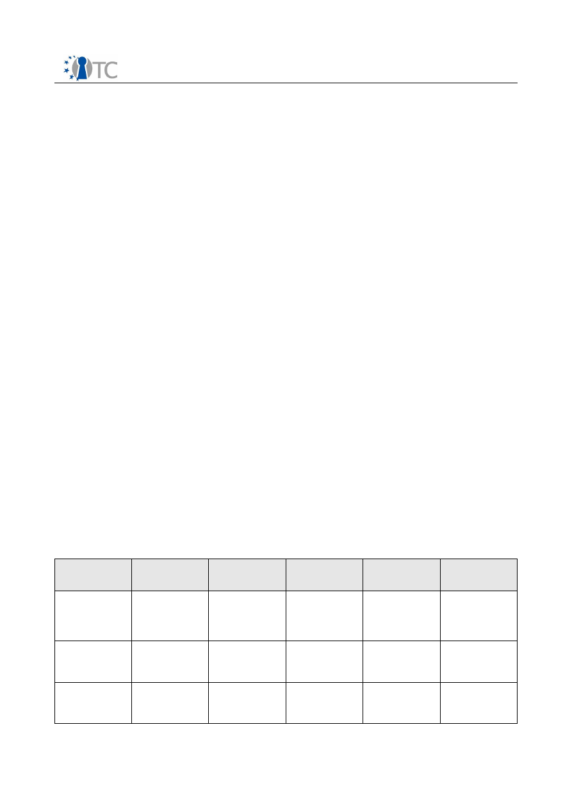
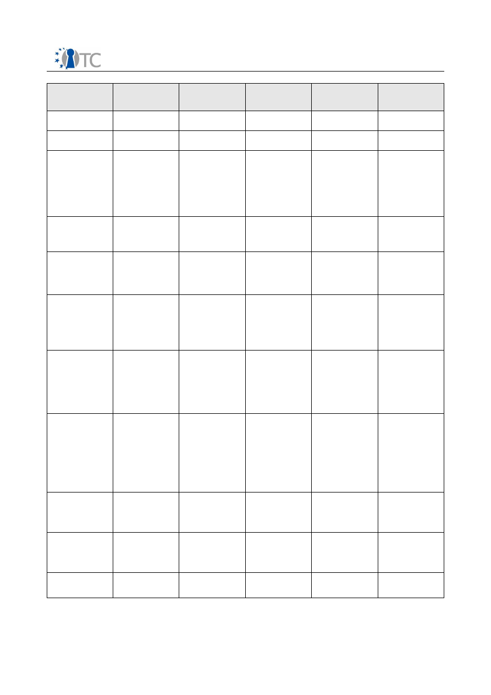
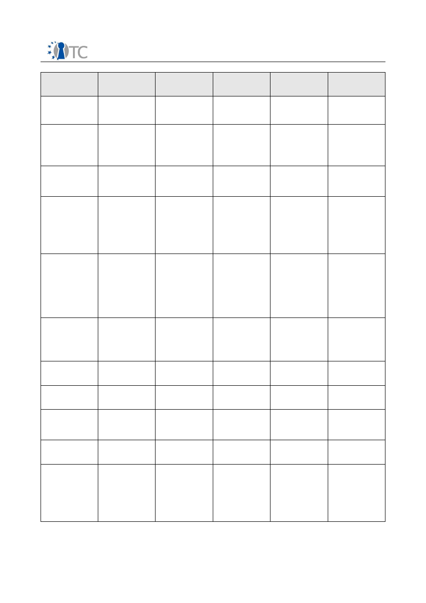
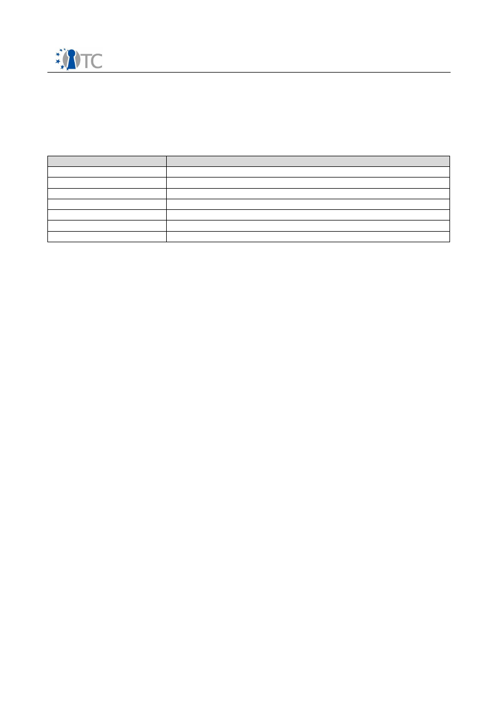

D10.7
OpenTC Exploitation Strategy
Status: November 2007
Project number
IST-027635
Project acronym
Open_TC
Project title
Open Trusted Computing
Type
Deliverable
Reference number
IST-027635 / D1
0
.
7
Final - | 1.0
Title
OpenTC Exploitation Strategy
WPs contributing
WP01
Due date
Oct. 2007 - M24
Actual submission date
November 30
th
, 2007
Responsible Organisation
HPLB, RHUL
Authors
Dirk Kuhlmann, Stephane Lo Presti, with
contributions from Matthias Schunter (IBM),
Roman Drahtmueller (SuSE/Novell), Peter
Herzog (Isecom)
Abstract
This document gives an overview of the
exploitation strategy of the OpenTC results.
It discusses technical and non-technical
factors relevant for the exploitation of project
results, lists the exploitable results as of
November 2007, and outlines the plan for
the remaining work period.
Keywords
OpenTC, Virtualization, Trusted Computing,
Strategy, Exploitation
Dissemination level
Public
Revision
Final - | 1.0
Instrument
IP
Start date of the
project
1
st
November 2005
Thematic Priority
IST
Duration
42 months
OpenTC Exploitation Strategy
Final - | 1.0
If you need further information, please visit our website
www.opentc.net
or contact
the coordinator:
Technikon Forschungs-und Planungsgesellschaft mbH
Richard-Wagner-Strasse 7, 9500 Villach, AUSTRIA
Tel.+43 4242 23355 –0
Fax. +43 4242 23355 –77
Email
coordination@opentc.net
The information in this document is provided “as is”, and no guarantee
or warranty is given that the information is fit for any particular purpose.
The user thereof uses the information at its sole risk and liability.
OpenTC D10.7
2/11

OpenTC Exploitation Strategy
Final - | 1.0
Table of Contents
1 Introduction and Executive Summary..........................................................................4
2 Strategic Considerations.............................................................................................. 6
3 OpenTC Exploitation Paths.......................................................................................... 7
3.1 OpenTC Proof-of-Concept Prototype....................................................................... 7
3.2 OpenTC Distribution based on openSuSE Linux...................................................... 7
3.3 Standardisation....................................................................................................... 8
3.4 Exploitation by individual OpenTC partners............................................................ 8
3.5 Exploitable Components and Knowledge by Partner...............................................8
4 List of Abbreviations.................................................................................................. 11
OpenTC D10.7
3/11
OpenTC Exploitation Strategy
Final - | 1.0
1 Introduction and Executive Summary
The OpenTC exploitation strategy is geared towards implementation and transfer of
the technology developed within the project, maximising the benefits for the project
participants, and promotion of a European approach for Trusted Computing. Planning
of the exploitation of project results began in M13. Independent from this, OpenTC
partners HP Labs, IBM Labs, and SuSE have since introduced preliminary results of
OpenTC to various corporate product divisions, where the inclusion of several project
results is planned or under investigation.
The chances for exploiting OpenTC results hinge critically on the future proliferation of
both virtualisation technology and Trusted Computing features. According to recent
market studies, the importance of virtualisation is growing, in particular in the server
sector. Virtualisation is also expected to be increasingly used on client machines –
Gartner Research
1
predicts more than 500 million desktops and notebooks to be
equipped with this technology until 2011. This forecast is based on the observation
that active customer demand is not required to drive the uptake; the major driving
force behind this massive deployment on client platforms will be the inclusion of
virtualisation technology in standard OS distributions from Microsoft from 2009
onwards.
A core activity of OpenTC is to investigate options for merging Trusted Computing and
virtualisation technology into
open
trusted virtualisation technology that can be used
in conjunction with
non-proprietary
guest operating systems such as Linux. Strictly
speaking, aspects of interoperability with and support for proprietary guest OSes are
therefore out of the project's scope. The advent of virtualisation, however, presents a
unique opportunity for fulfilling evolutionary strategies for migrating between
proprietary and non-proprietary execution environments. Both can then be used in
parallel to play to their respective strengths. in particular on client systems, and users
should also be in a position to freely choose between different types of hypervisors
(including proprietary and non proprietary ones) with regard to their capabilities, level
of validation etc.
This observation applies to both server and client scenarios. Interoperability for non-
proprietary and proprietary host operating systems can therefore be considered
crucial for the chances of commercial success for OpenTC, and we closely follow
developments of XEN and L4 to support virtualised instances of Microsoft's operating
system as hosts. Microsoft on its part has launched initiatives to improve
interoperability in mixed source environments and have set up co-operations with
XenSource and OpenTC partner SuSE/Novell as part of their strategy.
However, these initiatives have not extended to operating systems running on client
machines so far, and non-proprietary approaches to (trusted) virtualisation face some
difficulties arising from end user licenses that disallow virtualisation of OEM versions of
Microsoft's operating system. In Europe, the actual validity of such licensing terms is a
matter of national legislation, while there is a lack of a joint European approach to this
question. A harmonised European view on the legal status would undoubtedly further
the prospects of trusted virtualisation.
Like any strategy, OpenTC's exploitation plans will be subject to future updates and
changes to reflect and react to ongoing developments in technology and markets. We
1 B. Gammage, G. Shiffler III: Forecast for PC Virtualization. Gartner Research, ID G0015106,
8. August 2007
OpenTC D10.7
4/11

OpenTC Exploitation Strategy
Final - | 1.0
therefore consider this paper a working document that is likely to be be amended over
time following market trends and technology evolutions.
OpenTC D10.7
5/11

OpenTC Exploitation Strategy
Final - | 1.0
2 Strategic Considerations
Since the launch of the OpenTC project, hardware-based attacks on Trusted Platform
Modules (which are explicitly outside the scope of the TCG specification) were
conceptualised by OpenTC partners KUL and RUB, while TUD demonstrated their
actual technical feasibility. It turns out that the costs for these attacks are close to
zero – much smaller than, for example, those for breaking the protection of gaming
consoles or set-top-boxes – and their relative ease leads to the conclusion that the
current generation of TCG technology is unsuitable for any serious enforcement of
DRM on consumer platforms. In fact, the TCG has long maintained that Trusted
Computing was not designed for this purpose in the first place.
Protection against this class of attacks requires shielding the electric bus, which can
be achieved by integrating TPMs into CPUs or bus controllers. This, however, has so far
only be announced for high-end platforms. In near future, DRM-related use of TPMs
therefore appears to be an unlikely candidate to drive the application of Trusted
Computing (and OpenTC) technology. Plans for embedding TPMs in other hardware
elements have also raised concerns in European IT security agencies. As long as these
agencies have not released recommendations on this matter, the level of future public
acceptance of and support for TCG technology is anyone's best guess.
Xen has aroused the interest of security agencies and will be investigated for
certification at EAL5 by the US Naval Labs (with huge contributions from the NSA).
Given the current lack of documentation and the absence of evaluation-conformant
software development processes for Xen, this is likely to become a long term effort.
The level and quality of resources that are likely to be invested for this cannot even
remotely be matched by OpenTC, and it would therefore be of advantage if the
OpenTC project could make use of this initiative. However, while the security model
has been made public, it is not known whether this will be true for other results and
the test environment as well. The same is true for other international activities that
are in line with the OpenTC approach, namely Samsung's project to port Xen to mobile
devices using Arm 9 processors and Innotek's work on a bare-metal hypervisor based
on L4/Fiasco, the latter being developed by OpenTC partner TUD.
The most important strategic change during 2007 was the acquisition of XenSource –
the commercial entity spun out of CUCL's research on hypervisors – by Citrix Systems.
This development has rendered substantial parts of the OpenTC exploitation plan draft
invalid at month M16, since the commercial implications of the acquisition were and
still are quite unclear. The OpenTC partners IBM, HP, and SuSE/Novell are in the
process of re-evaluating their corporate strategies with regard to Xen. While this is
likely to have very limited impact on immediate OpenTC results (components,
demonstrator prototype, OpenTC distribution), it raises mid-term questions about
continued maintenance and support for an independent OpenTC distribution, since
partners such as HP, IBM or SuSE/Novell may decide to leverage commercially
supported versions of Xen rather than continuing to pour their own resources into
developing tailored, Xen-based solutions.
OpenTC D10.7
6/11

OpenTC Exploitation Strategy
Final - | 1.0
3 OpenTC Exploitation Paths
As a preparatory step towards an exploitation plan, OpenTC partners SuSE and HPLB
performed an analysis of the current market for trusted computing and virtualisation
technology as part of the the D01.2 Technical Leader report on Open Trusted
Computing strategy (M18). Of relevance for questions of exploitability are D01.2
chapters 3.1 and 3.5 (state and public acceptance of Trusted Computing), 3.6 (on IP
and licensing issues) and 4 (on virtualisation technology).
The D01.2 report was completed prior to the announcement of the corporate merger
between XenSource and Citrix. As a result of changes and unknowns introduced by
this merger, the completion of the internal deliverable D10d.2 on the preliminary
OpenTC exploitation strategy (D10d.2, M16) had to be postponed.
As the commercial consequences of the
Xensource/Citrix
merger are still unclear, the
planning for the final exploitation strategy was postponed accordingly. This
deliverable (D10.2 ,M24) has to be considered a working document and is to be
updated at least twice during the next reporting period (M28, M39).
3.1 OpenTC Proof-of-Concept Prototype
The PoC prototype is OpenTC's most important instrument to exploit OpenTC results
while the project is in progress. In co-operation with HPLB, POLITO has spearheaded
the extension of its current version into a training and development system.
The system is currently upgraded to include the security components developed
during year 2 of OpenTC's activities. We intend to test it as a training system at the
upcoming Trust2008 conference in Villach in March 2008. An openSuSE-based release
implementing the 'Corporate Computing At Home' scenario is planned for the same
event. Another version that includes year 3 results will be produced in late 2008 and
will be the basis of an openSuSE-based distribution.
The 2008 version of the PoC implements support for Virtual Private Networks and for
hosting proprietary operating systems and would allow to run the first real-world
experiments in corporate and business contexts. OpenTC partners will explore options
to test the system in a day-to-day work, building on top of the feedback provided by
the Free and Open Source Software community.
Due to the highly automated build process employed in the development of the
OpenTC prototype, both client- and server-targeted distributions can be packaged with
modest overhead.
3.2 OpenTC Distribution based on openSuSE Linux
Based on the results of the analysis presented in the OpenTC deliverable D01.2,
SuSE/Novell has worked with HPLB on a planning draft for an OpenTC extension for
future openSuSE distributions. This way, OpenTC results can be made available as a
configuration option for a commercially supported Linux distribution. The current plan
anticipates such a distribution for Q4/2008 or Q1/2009. Release targets are openSuSE
10.5 with the upcoming Linux kernel version 2.6.26 and XEN v3.2.
It should be stressed that this schedule relies on assumptions and extrapolations
about openSuSE Linux release dates that are not yet fixed, so the target times given
OpenTC D10.7
7/11

OpenTC Exploitation Strategy
Final - | 1.0
above might be subject to change. We expect more precise dates to be available in
M28 (April 2008) for inclusion in an updated version of the D10.7 exploitation plan.
3.3 Standardisation
Following recommendations from the project reviewers, OpenTC has extended the
scope and duration of its standardisation activities. In addition to supplying input to
the TCG via OpenTC members, we have launched a standardisation initiative for a Java
TSS API through the Java Community process.
We are also utilising OpenTC's insights and experience in a collaborative effort to
produce a Protection Profile on High Assurance Secure Kernels. This PP should be
finalised in early 2008, and OpenTC partners will investigate options for deriving
concrete security targets from this profile.
3.4 Exploitation by individual OpenTC partners
A large number of exploitation activities will be driven by the partners individually.
Core mechanisms for domain disaggregation developed in OpenTC are currently
evaluated for inclusion in the main development tree of Xen. HPLB has presented early
versions of the Corporate Computing at Home (CC@H) demonstrations to their
Personal Computer divisions to discuss how better support for similar use cases could
be provided by modified hardware.
IBM, HP and SuSE look into applying results developed in OpenTC as part of their data
center efforts. For IBM and HP, it is currently undecided whether the use of OpenTC
results will extend to re-using code developed in OpenTC or whether the companies
will prefer to exploit OpenTC results (e.g., for virtual networks, configuration and policy
management) at a conceptual level while providing their own implementations and
products under licenses of their choice. SUSE aims at integrating support for a CC@H–
like scenario in openSuse. The OpenTC framework could be provided both as an add-
on package for administrators and as a toolbox (smaller feature packages) for a build
infrastructure and production chain.
As for specific components and knowledge developed by each partner that is currently
available, please see next section.
3.5 Exploitable Components and Knowledge by Partner
Exploitable
Knowledge
(description)
Exploitable
product(s) or
measure(s)
Sector(s) of
application
Timetable for
commercial use
Patents or
other IPR
Protection
Owner and
other partner(s)
involved
Dedicated
OpenTC rev
mgmt, build, test,
and packaging
environment
openSuSE Linux
distribution
1. PC
2. Industrial
applications
2008
2009
None, Open
Source
SuSE
High Security Chip
Technology
Trusted Platform
Module chip for
Trusted
Computing
1. PC
2. Industrial
applications
2008
2009
several
IFX
Trusted TPM stack
software
- Linux TSS stack
V1.2 from WP03
-New MS TSS
version 1.2
1. PC and similar
platforms
2. next generation
of MS platforms
2008
None,Public;
Licenses for
commercial use
IFX
OpenTC D10.7
8/11

OpenTC Exploitation Strategy
Final - | 1.0
Exploitable
Knowledge
(description)
Exploitable
product(s) or
measure(s)
Sector(s) of
application
Timetable for
commercial use
Patents or
other IPR
Protection
Owner and
other partner(s)
involved
Network security
management
Xen hypervisors
System Mgmt
Approx 2008
no
IBM, HP
Storage security
management
Xen hypervisor
System Mgmt
Approx 2008
no
IBM
XIDC
management
extension for
generic XEN IPC
based, network
like
communication in
XEN
Prototype library
Universal (OS Virt) 2008
None, intended
release as OSS
HPLB
Security service:
virtual switch for
XEN inter-domain
communication
Prototype
implementation
Universal (OS virt) 2008
None, intended
release as OSS
HPLB, RUB
Security service:
GUI for XEN (client
platforms,
management
consoles)
Prototype
implementation
Universal
(OS virt)
2009
None, intended
release as OSS
HPLB, RUB, CUCL
Set of command
line utilities to
interact with the
system's TPM,
UPDATE
IAIK/OpenTC Java
TPM Tools (jTPM-
Tools)
Software
development
2007
None, open
source
IAIK
Object oriented
Java API for
interaction with
the TCG Software
Stack (TSS) for
Java applications,
UPDATE
IAIK/OpenTC Java
TSS Wrapper
Software
development
2007
None, open
source
IAIK
Tool to create
special types of
certificates and
certificate
extensions as
specified by the
Trusted
Computing Group,
UPDATE
IAIK/OpenTC
TCcert
Software
development
2007
None,
free for research,
education and
eval.
IAIK
XKMS PKI protocol
implementation,
release and
UPDATE
IAIK XKMS
Software
development
end of 2006
None,
free for research,
education and
eval.
IAIK
Native Java
Implementation of
the TCG Software
Stack (TSS)
IAIK jTSS
Software
development
2008
None, open
source
IAIK
Java Privacy CA
implementation
IAIK privacy CA
Software
development
2008
None, open
source
IAIK
OpenTC D10.7
9/11

OpenTC Exploitation Strategy
Final - | 1.0
Exploitable
Knowledge
(description)
Exploitable
product(s) or
measure(s)
Sector(s) of
application
Timetable for
commercial use
Patents or
other IPR
Protection
Owner and
other partner(s)
involved
Java Proxy with
Attestation
support
IAIK proxy
Software
development
2007
None
IAIK
Testing
experience in
automated TSS
security testing
TCG Software
Stack (TSS)
Security and
Robustness Test
Suite
IT (Trusted
Computing)
2008
No patents yet
BME, coop. with
SEARCH-LAB Ltd.
Certificate service
provider
management
application
MEITC CA
component
Certificate
management
2008
-
TUBITAK
command line and
library utilities to
interact with the
system's TPM and
a privacy CA, with
implementation of
DAA - UPDATE
POL/OpenTC
Trusted Platform
Agent (TPA)
Software
development
2008
None, open
source
POL
Libraries and
services to make
secure standard
application
(protection of
keys and
configuration
files) - UPDATE
POL/OpenTC Key
Management
Adaptation
service (KMA)
Software
development
2008
None, open
source
POL
Set of applications
enhanced with
KMA - RELEASE
OpenSSH, Ipsec
setkey utility,
Racoon (IKE),
OpenSSL engine,
PKCS#11
interface
Software
development
2008
None, open
source
POL
MPEG-21 License
parsing
DRM Core
Compartment
Digital Rights
Mgmt
No plans
commercial
exploitation so far
-N/A
LDV
On-the-fly video
decryption for
MPEG-4/21 files
DRM Player
Compartment
Digital Rights
Mgmt
No plans
commercial
exploitation so far
--N/A
LDV
Graphical user
interface of a TC-
secured
hypervisor
Hypervisor
software
virtualisation-
enhanced
hardware
Patent protection
considered
ITAS
Password
management
system
Hypervisor
software
virtualisation-
enhanced
hardware
Patent protection
considered
ITAS
Teaching of
Trusted
Computing and its
associated
technologies,
including the
OpenTC PoC
prototype
Tutorial
documents
(papers, book
chapters,
presentations),
and HOWTOs
1. Academia
2. Professional
Training
N/A
N/A
RHUL, IAIK, TUB
OpenTC D10.7
10/11

OpenTC Exploitation Strategy
Final - | 1.0
4 List of Abbreviations
Listing of term definitions and abbreviations used in the overview documents and
architectural design specification (IT expressions and terms from the application
domain).
Abbreviation
Explanation
DRM
Digital Right Management
OS
Operating System
OEM
Original Equipment Manufacturer
TC
Trusted Computing
TCB
Trusted Computing Base
TCG
Trusted Computing Group
TPM
Trusted Platform Module
OpenTC D10.7
11/11
Document Outline